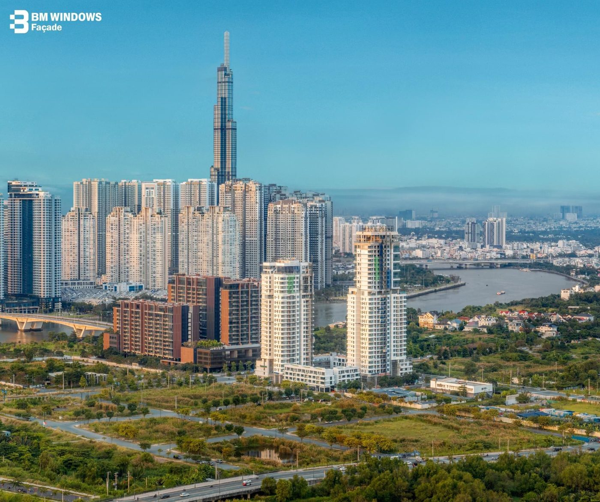
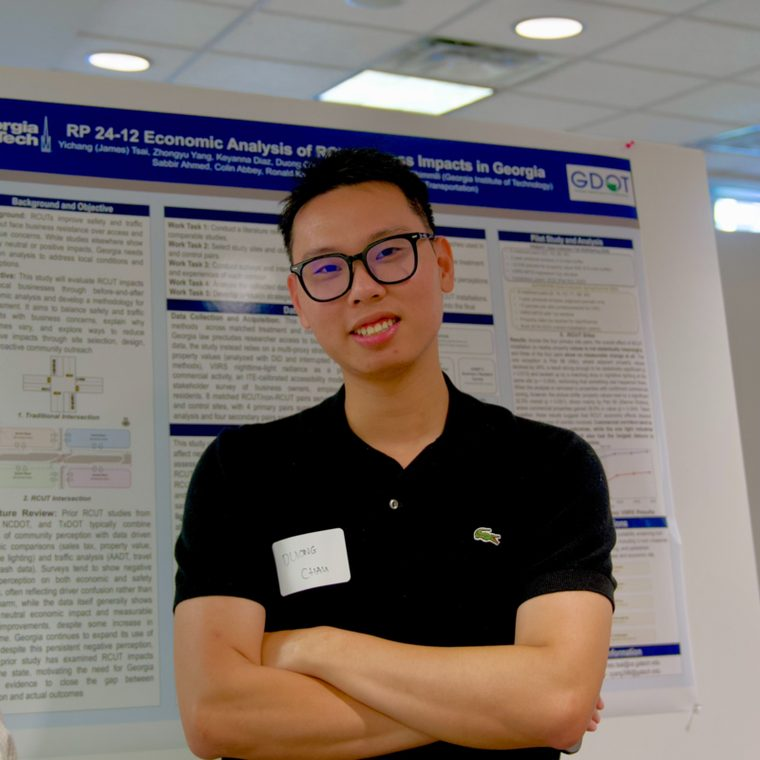
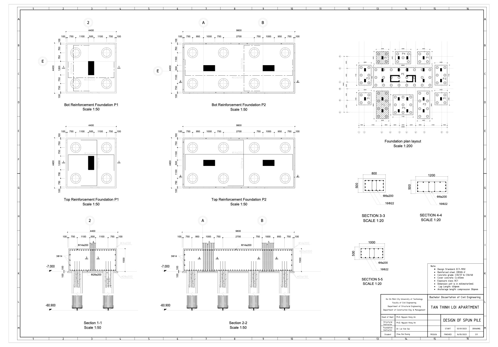
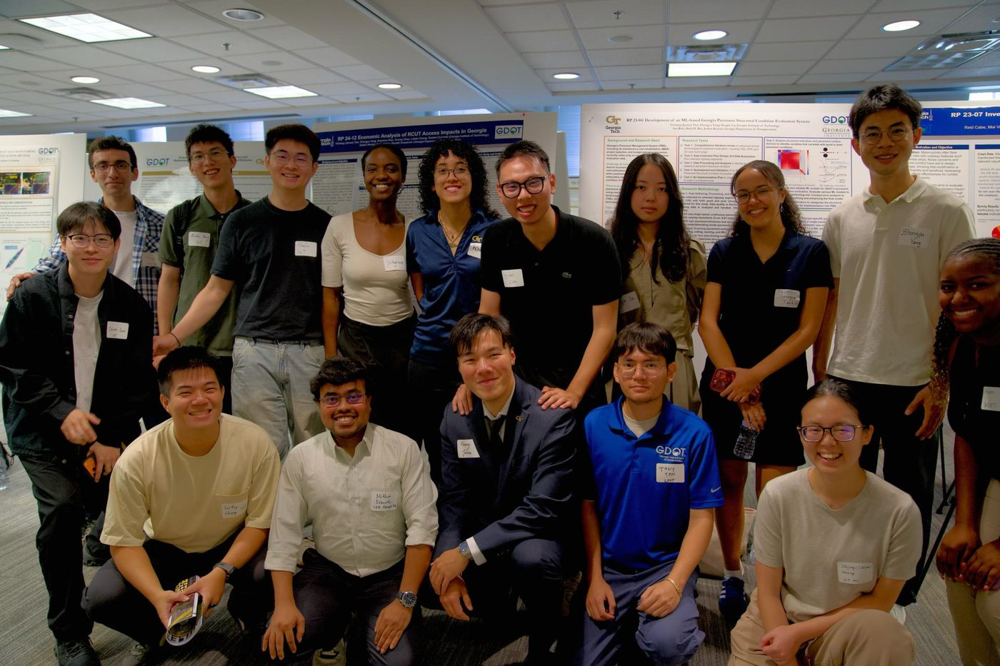

Façade package

34 + 27storeysZeit River Thu Thiem
Two towers for GS E&C in a dual-colour unitised aluminium façade with continuous radiused corners. Shop drawing through fabrication, delivery and installation.
> Project Engineer
M.S. Civil Engineering (CEM) at Georgia Tech. I've run a high-rise façade package on site, designed a 14-storey RC building, and now research Georgia DOT projects in Dr. Tsai's lab.
Drag to rotate
01 · Introduction

I'm a second-semester M.S. student in Civil Engineering at Georgia Tech on the Construction Engineering & Management (CEM) track, graduating in December 2027, and a graduate research assistant under Prof. Yichang (James) Tsai on Georgia DOT projects. Before Georgia Tech I studied engineering management at SIUE and business administration (MBA) at DeVry University.
I trained as a structural engineer at Ho Chi Minh City University of Technology on the structural and foundation track. My capstone was the full design of a 14-storey reinforced concrete apartment building — frame, beams, columns, slabs, staircases, rooftop water tank, down to the spun pile foundation.
Then I went to the field. A summer as a field engineer intern with Newtecons on Flora Mizuki, and a year with BM Windows as superintendent and project engineer on the Zeit River Thu Thiem façade package. I processed the RFIs and submittals, produced and reviewed the shop drawings, coordinated the trades, and held the fabrication–delivery–installation schedule together.
That year taught me the thing design school cannot: a drawing is only worth what the crew can actually build from it at eleven o'clock on a wet morning.
I'm looking for a Spring 2027 part-time co-op and a Summer 2027 internship in project engineering, field engineering, or VDC. As an international student I'm eligible to work under CPT, so no sponsorship is needed.
Every conflict caught between the architect's intent and the structural frame in AutoCAD is a conflict the crew never meets on a scaffold.
Fabrication, delivery and installation are one chain. A date that slips at the factory is a crane that idles on site three weeks later.
In research and on site the rule is the same: check the arithmetic, then say what the number means — never the other way round.
02 · What I have done so far
Jan 2026 – Present
Georgia Institute of Technology · Prof. Yichang (James) Tsai
Jun 2023 – Jan 2024
BM Windows JSC · Zeit River Thu Thiem, Ho Chi Minh City
Summer 2022
Newtecons · Flora Mizuki MP9 & MPX, Mizuki Park
Oct 2021 – Mar 2022
Ho Chi Minh City University of Technology
03 · Field work in detail
Two residential towers in Thu Thiem, Ho Chi Minh City, wrapped in a dual-colour unitised aluminium façade with continuous radiused corners. I held BM Windows' package from shop drawing to installed, inspected panel. Hover a band to see which drawing sets covered it.
Floors fill in as the install sequence runs. Pick a band.
Zone B submission · click to open full size
04 · Selected projects
Towers I helped build, a building I designed, and the research I'm running now. Every card opens a case study: the context, what I owned, what made it hard, and what I took away.

34 + 27storeysTwo towers for GS E&C in a dual-colour unitised aluminium façade with continuous radiused corners. Shop drawing through fabrication, delivery and installation.
Residential high-rise in the Mizuki Park township, Binh Chanh, with Newtecons as general contractor from foundation to landscape.

14storeys · RCSlabs, frames, stairs and rooftop tank to Eurocode 2, on D900 spun piles to −60.9 m, compared against a bored pile option under Eurocode 7.
A load-transfer method for shaft-grouted piles, validated on full-scale tests at Friendship Tower. Grouting raised ultimate capacity about 1.7–2×.

18 × 7factors · categoriesHow RCUT intersections affect nearby Georgia businesses, across property values, nighttime lights, accessibility decay and surveys.
Leading a team that finds PC/PT points, radius and deflection angle from roadway centreline geometry, benchmarked on IoU and PC/PT error.
A Georgia DOT study that quantitatively assesses how bikeway types are selected across Georgia.
Virtual-reality environments for safety training and hazard recognition at the AutoRob Lab, under Dr. Omobolanle (Bola) Ogunseiju.
05 · What I bring
A field-leadership profile with the technical side intact — I can run the crew and still open the model.
06 · Where I studied
Spring 2026 – Dec 2027 (expected)
Georgia Institute of Technology · Atlanta, GA · GPA 4.00
Spring 2025 – Dec 2025
DeVry University · GPA 4.00
Spring 2024 – Dec 2024
Southern Illinois University Edwardsville (SIUE)
Fall 2019 – Spring 2023
Ho Chi Minh City University of Technology (HCMUT)
07 · Get in touch
I'm looking for a part-time co-op for Spring 2027 and a full-time internship for Summer 2027 — project engineering, field engineering, or VDC. I'm in metro Atlanta and eligible to work under CPT, so no sponsorship is needed.